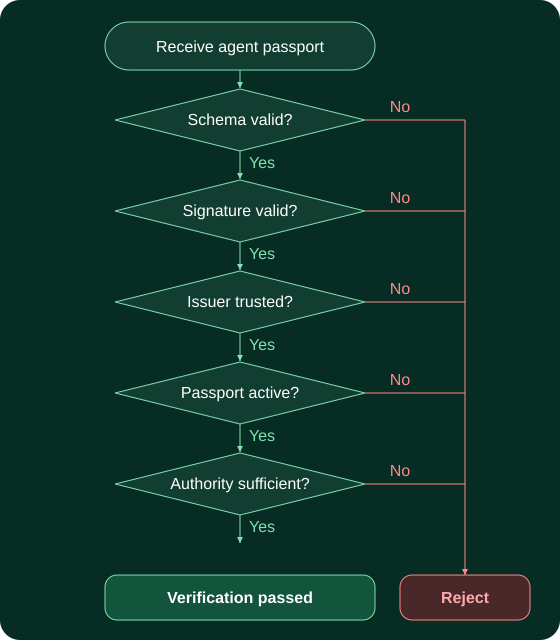
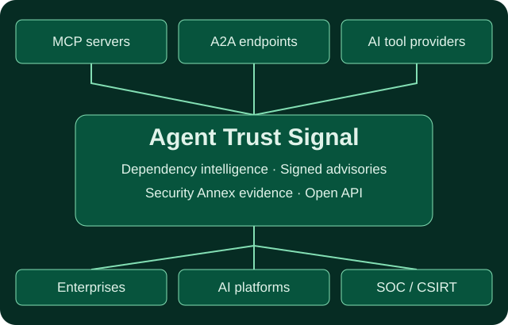

01 /
Discovery
Authorised MCP metadata, A2A Agent Cards and enterprise inventories identify dependencies. Metadata alone does not establish provider identity.
Discover. Authenticate. Correlate. Notify.
Authorised MCP metadata, A2A Agent Cards and enterprise inventories identify dependencies. Metadata alone does not establish provider identity.
Validate advisory provenance, scope, freshness and affected versions; quarantine unverified information.
Map evidence to customer-defined Information Security Annex controls. Unknown evidence remains unknown; customer policy governs response.
Proposed pipeline with explicit review paths and signed notifications.
Try the simulated API ↗
